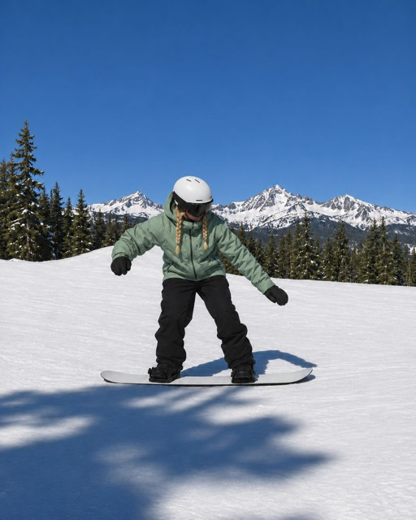
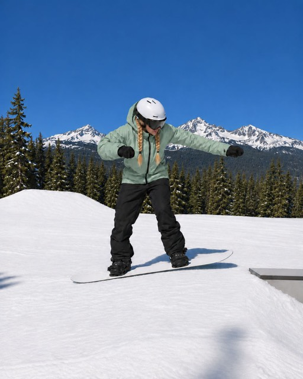
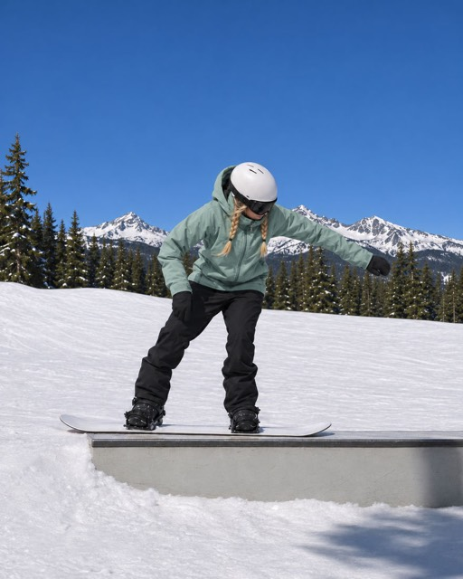
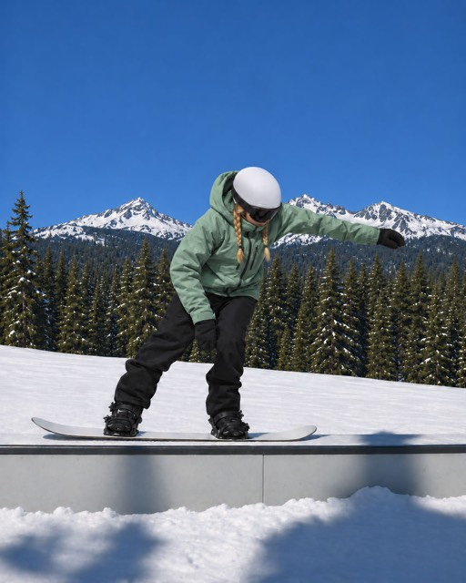
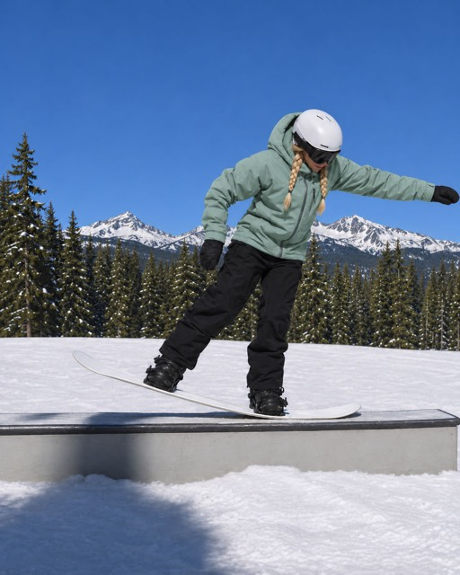
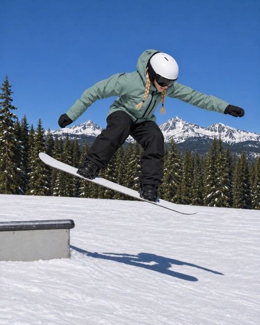

1Ride straight at the box, board flat, knees bent, arms out for balance.

2Small ollie at the edge of the box: the board lands flat, in line with the box.

3Board flat, weight centred between your feet, soft knees, eyes on the end of the box.

4Move your hips and shoulders over the front foot: the front leg bends.

5Press the nose: the tail lifts. Arms out, hold the press to the end of the box.

6At the end of the box, pop and level the board, then land with bent knees.